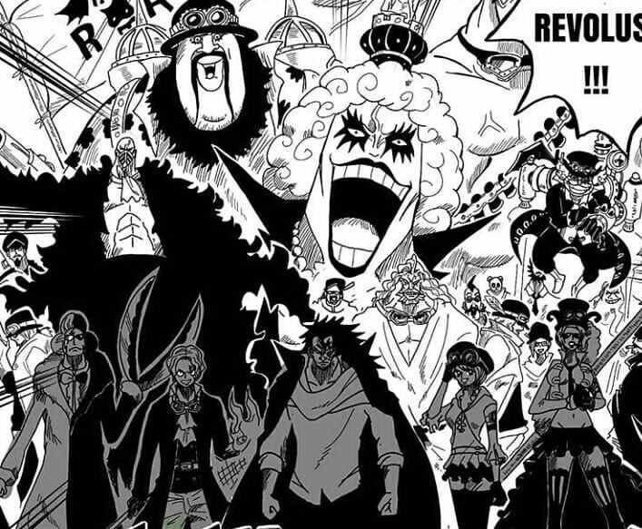

Pasukan Revolusi Mulai Kibarkan Panji Perlawan Kepada Pemerintah Dunia, Final Saga di Mulai!

Teras Alim - Eiichiro Oda jauh-jauh hari sudah meramalkan bahwa
perang akbar bakal segera terjadi.Tanda-tandanya pun perlahan
Eiichiro Oda perlihatkan dalam cerita One Piece. Yang terbaru pada
chapter 1083 terlihat Sabo telah menghancurkan simbol cakar naga
milik Tenryuubito sebagai tanda mulainya perang. Selain itu Sabo
dan para Komanda pasukan revolusi juga telah membakar habis gudang
persediaan logistik di Marijoa. Tak ketinggalan juga para pasukan
revolusi juga membajak kapal pemerintah dunia yang mengangkut
bahan logistik.
Baca juga : Kapan FIFA Matchday Timnas Indonesia vs Argentina? Ini Konfirmasi
Federasi Sepak Bola La Albicelestes
Bahkan yang lebih mengerikannya pasukan revolusi
telah mengajak beberapa negara untuk memberontak kepada pemerintah
dunia. Disisi lain kembalinya Sabo ke markas pasukan revolusi juga
memberi angin segar bahwa Sabo masih hidup. Sabo pun tak
menyia-nyiakan waktunya dan langsung membuat pertemuan dengan
petinggi pasukan revolusi. Dan pasca pertemuan tersebut Dragon
sang pemimpin pasukan revolusi langsung memerintah seluruh pasukan
revolusi untuk mengibarkan panji perlawanan kepada pemerintah
dunia. Tak tanggung-tanggung seluruh pasukan revolusi di dunia One
Piece pun menyambut dengan gembira perintah Dragon tersebut.
Bahkan 8 negara yang sebelumnya telah melakukan pemberontakan
kepada pemerintah dunia juga turut ambil bagian dalam barisan
perlawanan. Dan hal yang diramalkan oleh Eiichiro Oda sebelumya
bakal segera terjadi, dan perang ini bakal menjadi awal mulai dari
final saga. Disclaimer: Tulisan ini dibuat untuk hiburan semata
dan tidak ada maksud untuk mengubah cerita One Piece yang dikarang
oleh Eiichiro Oda.***
Ingin berdiskusi lebih lanjut??